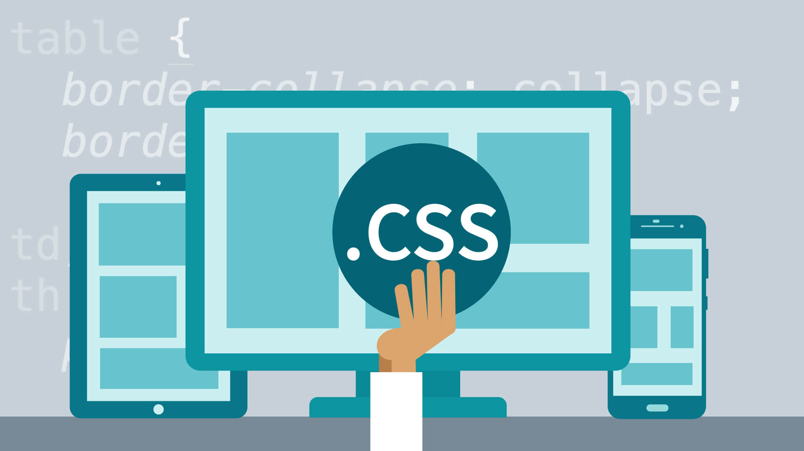
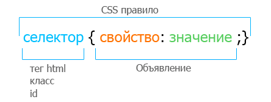

Оглавление
Введение в CSS

CSS (Cascading Style Sheets — каскадные таблицы стилей) — формальный язык описания
внешнего вида
документа, написанного с использованием языка разметки.
Преимущественно используется как средство описания, оформления внешнего вида
веб-страниц, написанных
с помощью языков разметки HTML и XHTML, но может также применяться к любым XML-документам, например,
к SVG или XUL.
Цель создания CSS
CSS используется создателями веб-страниц для задания цветов, шрифтов, расположения отдельных блоков и других аспектов представления внешнего вида этих веб-страниц.
Основной целью разработки CSS являлось разделение описания логической структуры веб-страницы (которое производится с помощью HTML или других языков разметки) от описания внешнего вида этой веб-страницы (которое теперь производится с помощью формального языка CSS). Такое разделение может увеличить доступность документа, предоставить большую гибкость и возможность управления его представлением, а также уменьшить сложность и повторяемость в структурном содержимом.
Кроме того, CSS позволяет представлять один и тот же документ в различных стилях или методах вывода, таких как экранное представление, печатное представление, чтение голосом (специальным голосовым браузером или программой чтения с экрана), или при выводе устройствами, использующими шрифт Брайля.
CSS может использоваться для очень простой стилизации текста документа, например, изменение цвета и размера заголовков и ссылок. Он может быть использован для создания макета, например, превращение одного столбца текста в макет с основной областью контента и боковой панелью для соответствующей информации. Это может даже использоваться для эффектов, таких как анимация.
Способы подключения CSS к документу
Правила CSS пишутся на формальном языке CSS.
Правила могут располагаться как в самом веб-документе,
внешний вид которого они описывают, так и во внешних файлах, имеющих формат CSS.
Формат CSS — это
текстовый файл, в котором содержится перечень правил CSS и комментариев к ним.
Cтили CSS могут быть подключены или внедрены в описываемый ими веб-документ четырьмя способами:
- когда описание стилей находится в отдельном файле, оно может быть подключено к документу посредством элемента <link>, включенного в элемент <head>;
- когда файл стилей размещается отдельно от родительского документа, он может быть подключен к документу инструкцией @import в элементе <style>;
- когда стили описаны внутри документа, они могут быть включены в элемент <style>, который включается в элемент <head>;
- когда стили описаны в теле документа, они могут располагаться в атрибутах отдельного элемента.
В первых двух случаях к документу применены внешние стили, а в остальных — внутренние стили.
Синтаксис CSS
У языка CSS относительно простой синтаксис. Сначала прописывается селектор — он выбирает конкретный элемент на странице. Потом, после фигурных скобок, указываются свойства со значениями — между ними ставится двоеточие. Сами свойства отделяются друг от друга точкой с запятой.

Селектор в CSS - это конструкция, которая позволяет выбрать отдельные или однотипные
элементы на странице, чтобы их стилизовать.
С селектора начинается каждый блок объявлений в CSS.
Подробнее о селекторах и их видах в разделе "Виды селекторов" в шапке сайта.
Наследование. Каскадирование. Приоритеты стилей CSS
Применение CSS к документам HTML основано на принципах наследования и каскадирования. Принцип наследования заключается в том, что свойства CSS, объявленные для элементов-предков, почти всегда наследуются элементами-потомками.
Принцип каскадирования применяется в случае, когда какому-то элементу HTML одновременно поставлено в соответствие более одного правила CSS, то есть, когда происходит конфликт значений этих правил.
Чтобы разрешить такие конфликты, вводятся правила приоритета:
- наиболее низким приоритетом обладает стиль браузера;
- следующим по значимости является стиль, заданный пользователем браузера в его настройках;
-
и наиболее высоким приоритетом обладает стиль, заданный непосредственно автором страницы. И далее,
уже в этом авторском стиле приоритеты расставляются следующим образом:
- самым низким приоритетом обладают стили, наследуемые в документе элементом от своих предков;
- более высоким приоритетом обладают стили, заданные во внешних таблицах стилей, подключённых к документу;
- Ещё более высоким приоритетом обладают стили, заданные непосредственно селекторами всех десяти видов, содержащимися в контейнерах style данного документа. Нередки случаи, когда к какому-нибудь элементу имеют отношение, задают его вид, несколько таких селекторов. Такие конфликты между ними разрешаются с помощью расчёта специфичности каждого такого селектора и применения этих селекторов к данному элементу в порядке убывания их специфичностей.
-
но, самым высоким приоритетом обладают стили, объявленные автором страницы или пользователем, с
помощью сопроводительного правила !important.
Если таких свойств несколько, то предпочтение отдаётся в первую очередь стилям, заданным автором или пользователем, а для остальных свойств, которые будут являться задаваемыми автором страницы, потребуется определить их специфичности по принципам, описанным выше, и применять эти свойства в порядке убывания этих специфичностей.
Расширения CSS
Часто при вёрстке страниц нужно использовать одно и то же значение много раз: один и тот же цвет, один и тот же шрифт. И если это значение нужно будет изменить, то придётся менять во многих местах.
Для решения этих вопросов и ускорения разработки существует несколько расширений (препроцессоров) языка
CSS. Они нужны, чтобы сделать CSS чище и в заметной степени сократить количество кода, которое
приходится писать для оформления сайта. А в некоторых случаях, чтобы добавить в CSS функции, по
умолчанию отсутствующие в языке.
Чтобы из кода «расширенного CSS» получился обычный CSS-файл, воспринимаемый браузером, необходимо
выполнить
компиляцию.
Компиляция может быть нескольких типов:
- во время запуска страницы на стороне клиента (средствами JavaScript);
- во время запуска страницы на стороне сервера;
- во время вёрстки сайта средствами специального компилятора.
Примеры препроцессоров CSS:

- Sass – самый популярный и часто используемый препроцессор. Отличается от остальных наиболее сложным синтаксисом. Требует более четко прописывать визуальные стили и заставляет вводить больше кода, чем хотелось бы. Но при этом SASS обладает функциями, недоступными у конкурентов, поэтому он и лежит в основе многих фреймворков.
- Less – более простой с точки зрения синтаксиса препроцессор, но более ограниченный с функциональной точки зрения. При этом имеет более качественную поддержку в большинстве IDE и отлично подходит для новичков и несложных сайтов.
- Stylus – интересный язык, в заметной степени меняющий представление о том, как оформляется CSS. Он напоминает Python, где отсутствуют многие скобки и спецсимволы.